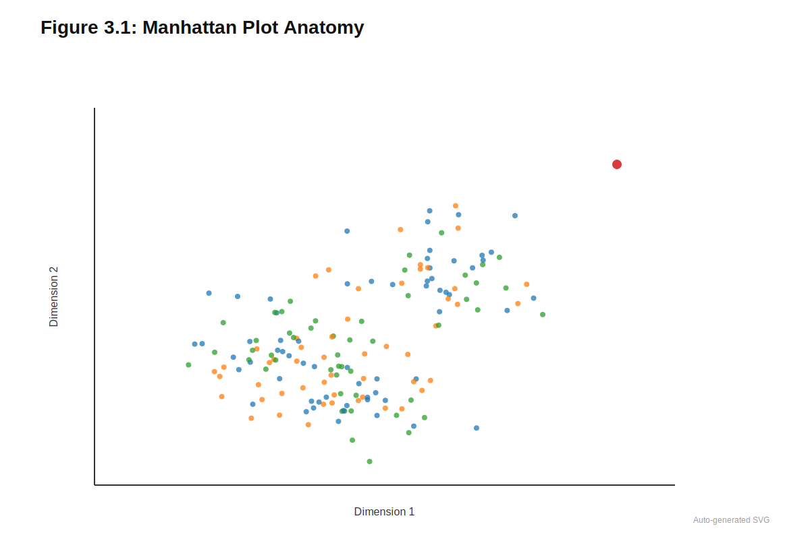
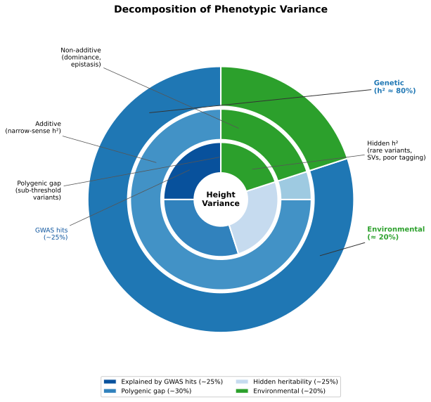
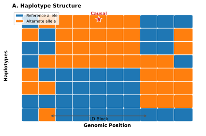
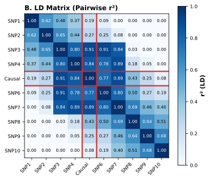
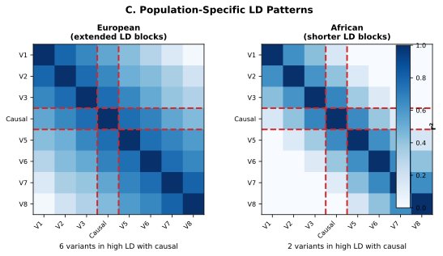
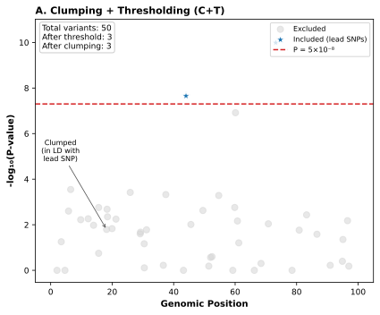
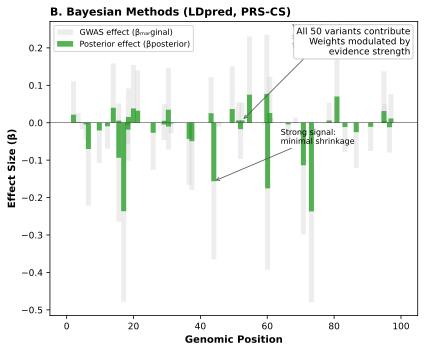
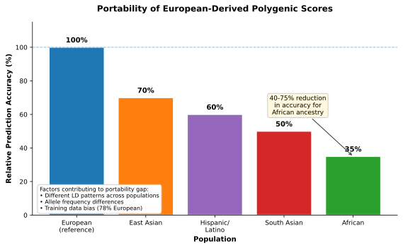

3 GWAS and Polygenic Scores
GWAS do not identify causes. They identify signposts.
Prerequisites: Basic understanding of genetic variants (SNPs, alleles) from Chapter 1 and familiarity with population genetics concepts. No prior statistics beyond introductory probability required.
You will learn:
- How genome-wide association studies identify genetic variants linked to traits and diseases
- Why GWAS signals represent associations with genomic regions, not identifications of causal variants
- How heritability partitions phenotypic variance into genetic and environmental components
- How linkage disequilibrium creates the fundamental gap between statistical association and biological causation
- How polygenic scores aggregate thousands of small effects into clinically meaningful risk predictions
- Why polygenic scores perform differently across ancestral populations and what this means for equity
Key insight: GWAS identify signposts, not causes. The path from associated variant to biological mechanism requires additional methods, and the path from statistical association to equitable clinical utility requires attention to who was included in discovery cohorts.
When a genome-wide association study (GWAS) reports that a particular single nucleotide polymorphism (SNP) associates with coronary artery disease, that SNP is almost certainly not the variant that alters cardiac biology. It is correlated with the causal variant through linkage disequilibrium, the non-random association of nearby alleles that persists across generations. The statistical machinery of GWAS is exquisitely sensitive to these correlations but fundamentally agnostic about mechanism. It can identify a region of the genome that harbors trait-relevant variation without distinguishing the causal variant from its correlated neighbors, without explaining which genes or pathways are affected, and without revealing whether the same associations hold in populations with different linkage patterns.
This distinction between association and causation defines the central intellectual challenge of statistical genetics. GWAS have identified thousands of genomic regions associated with hundreds of complex traits, from height and blood pressure to schizophrenia and type 2 diabetes. These associations replicate across studies with remarkable consistency, confirming that the signals are real. Yet the path from associated region to biological mechanism remains obscure for most loci. The majority of GWAS signals fall in non-coding regions where there is no obvious gene to implicate. Even when a signal overlaps a gene, whether it affects expression, splicing, or protein function is rarely apparent from the association alone.
Polygenic scores aggregate these associations into predictions, summing risk alleles across thousands of loci to estimate an individual’s genetic predisposition. For some traits, these scores achieve clinically meaningful discrimination: individuals in the top percentile of coronary artery disease risk have odds ratios comparable to monogenic familial hypercholesterolemia. Yet polygenic scores inherit all the limitations of the associations they aggregate. They predict without explaining, correlate without identifying mechanism, and transfer poorly across populations with different allele frequencies and linkage patterns. Understanding both their power and their limitations is essential for mechanistic approaches where regulatory sequence models (Chapter 16) and variant effect predictors (Chapter 17) attempt to move from statistical association to biological explanation (Khera and Kathiresan 2017). The portability challenges of polygenic scores across populations motivate the fairness and equity considerations examined in ?sec-ch22-ancestry-confounding and Section 27.8.
3.1 GWAS Framework
Consider a clinician counseling a patient about cardiovascular disease risk. Traditional risk factors (age, smoking, cholesterol, blood pressure) explain roughly 50% of the variation in who develops disease (Khera and Kathiresan 2017). Family history suggests that genetics contributes substantially to the remainder, but which genetic variants matter, and how much does each contribute? GWAS provide a systematic approach to answering these questions by testing each of millions of variants for association with the trait of interest.
The scale required for well-powered GWAS explains why large-scale biobanks (Section 2.3 for comprehensive biobank descriptions, Section 2.9 for data composition biases) have become essential infrastructure for statistical genetics. UK Biobank, with its 500,000 participants genotyped across hundreds of thousands of variants and linked to extensive phenotypic data, has enabled GWAS for thousands of traits at sample sizes that were unimaginable a decade ago. Similar resources, including the Million Veteran Program, FinnGen, and All of Us, continue to expand the scope of discoverable associations. The biobank paradigm of combining dense genotyping with rich phenotyping at population scale has transformed GWAS from underpowered fishing expeditions into reliable discovery engines.
The core logic is straightforward. For each variant in turn, researchers ask whether individuals carrying more copies of a particular allele tend to have higher or lower values of the phenotype (for quantitative traits) or higher or lower probability of disease (for binary outcomes). They estimate an effect size, compute a test statistic under the null hypothesis of no association, and record a p-value. After testing millions of variants, those exceeding a stringent significance threshold are identified, the associated loci reported, and interpretation begins regarding which genes and pathways might be involved.
This apparently simple procedure requires careful attention to study design, quality control, and statistical modeling. The phenotype must be measured consistently across individuals. The genotypes must be accurate and the variants well-defined. Confounders that correlate with both genotype and phenotype (most notably population structure) must be controlled. Multiple testing across millions of variants demands stringent significance thresholds. Only after addressing these challenges can GWAS results be trusted and translated into downstream applications.
3.1.1 Association Models for Quantitative Traits
Choosing the wrong statistical model for a GWAS does not merely introduce imprecision; it distorts effect size estimates in ways that propagate through every downstream analysis, from fine-mapping to polygenic scores to drug target prioritization. A height GWAS and a schizophrenia GWAS require fundamentally different approaches because one outcome is continuous and the other binary. Applying linear regression to a binary outcome produces fitted values outside the 0-1 probability range and residuals that violate normality assumptions.
The following sections introduce statistical models using mathematical notation. Readers unfamiliar with regression can focus on the conceptual intuition: for each variant, we ask whether people with more copies of one allele tend to have higher or lower values of the trait, after accounting for confounding factors like age, sex, and ancestry.
For continuous phenotypes such as height, LDL cholesterol, or blood pressure, the standard approach is linear regression. Let \(y_i\) denote the phenotype for individual \(i\), and let \(g_{ij}\) denote the genotype dosage at variant \(j\), encoded as \(0\), \(1\), or \(2\) copies of the alternative allele (or as a fractional value for imputed genotypes). The model is:
\[ y_i = \alpha + \beta_j g_{ij} + \gamma^\top c_i + \varepsilon_i \]
The coefficient \(\beta_j\) represents the expected change in phenotype per additional copy of the alternative allele, holding covariates \(c_i\) fixed. When phenotypes are standardized to zero mean and unit variance, \(\beta_j\) is expressed in standard deviation units per allele. The vector \(c_i\) typically includes age, sex, genotyping batch, and principal components capturing ancestry (discussed below). The residual \(\varepsilon_i\) captures unexplained variation, assumed to be independent and identically distributed across individuals.
For each variant, a test statistic is computed for the null hypothesis \(H_0: \beta_j = 0\). In large samples, the t-statistic follows approximately a standard normal distribution under the null, yielding a two-sided p-value. With \(M\) variants tested (typically \(10^6\) to \(10^7\) after imputation), multiple comparison correction is essential. The conventional genome-wide significance threshold of \(5 \times 10^{-8}\) approximates a Bonferroni correction for roughly one million effectively independent tests, accounting for correlation among variants due to linkage disequilibrium (Risch and Merikangas 1996; Pe’er et al. 2008).
For ML readers: Testing millions of variants creates a massive multiple testing problem:
The problem: If you test 1 million variants at \(\alpha = 0.05\), you expect 50,000 false positives by chance alone. GWAS must distinguish true signals from this noise.
Bonferroni correction: Divide \(\alpha\) by the number of tests. For 1 million tests: \(0.05 / 1{,}000{,}000 = 5 \times 10^{-8}\). This threshold has become the conventional genome-wide significance cutoff.
Why it works: Variants in linkage disequilibrium are correlated, so there are roughly 1 million effectively independent tests even when testing 10 million variants. The \(5 \times 10^{-8}\) threshold controls the family-wise error rate (FWER)—the probability of any false positive.
Consequences for ML:
- GWAS hits represent extremely strong statistical signals (typically hundreds or thousands of samples carry each risk allele)
- Marginal effects (variants that contribute but don’t reach significance) are systematically excluded
- Polygenic scores must handle the millions of “sub-threshold” variants that collectively explain substantial heritability
3.1.2 Association Models for Disease Outcomes
Binary outcomes create a specific statistical problem that, if ignored, systematically distorts effect size estimates in ways that compound through downstream applications. When the phenotype is disease status (affected or unaffected), linear regression produces nonsensical predictions: fitted values outside the 0-1 probability range and residuals that violate normality assumptions. The consequence extends beyond statistical inelegance. Effect sizes estimated under the wrong model propagate into polygenic scores and risk prediction, potentially misclassifying patients who sit near clinical decision thresholds where intervention recommendations change.
For binary phenotypes, logistic regression replaces linear regression. The model relates genotype to the log-odds of disease:
\[ \log \frac{P(y_i = 1)}{P(y_i = 0)} = \alpha + \beta_j g_{ij} + \gamma^\top c_i \]
Here \(\beta_j\) is the log-odds ratio per allele, and \(\exp(\beta_j)\) gives the odds ratio (OR). An odds ratio of \(1.2\) means that each additional copy of the alternative allele increases the odds of disease by \(20\%\). For rare diseases (prevalence below approximately \(10\%\)), odds ratios approximate relative risks, but the distinction matters for common conditions and when communicating absolute risk to patients.
Case-control sampling, in which cases are enriched relative to their population frequency, distorts absolute risk estimates but preserves the validity of odds ratio estimation. This mathematical property explains why GWAS conducted in case-control designs can still produce effect sizes useful for polygenic scores, provided downstream applications account for baseline disease incidence. The likelihood function conditions on disease status, making the odds ratio identifiable regardless of sampling scheme.
Consider a GWAS for type 2 diabetes with 10,000 cases and 10,000 controls, when the true population prevalence is only 8%. If you compute the raw proportion of cases in the study (50%), this clearly misrepresents population risk. Why does the odds ratio remain valid despite this artificial enrichment of cases? What would happen if you tried to convert this odds ratio to absolute risk without accounting for the sampling design?
3.1.3 Manhattan Plots and Q-Q Plots
The Manhattan plot has become the iconic visualization of GWAS results, named for its resemblance to the New York City skyline. Each point represents a tested variant, with genomic position along the x-axis (ordered by chromosome) and negative log-transformed p-value on the y-axis. Variants with stronger associations rise higher; those exceeding the genome-wide significance threshold of \(5 \times 10^{-8}\) (typically drawn as a horizontal line at \(-\log_{10}(5 \times 10^{-8}) \approx 7.3\)) are considered significant hits.
The Manhattan plot reveals both the successes and limitations of GWAS at a glance. Prominent peaks indicate genomic regions harboring trait-associated variants, but each peak typically contains dozens or hundreds of correlated variants rather than a single causal nucleotide. The width of peaks reflects local linkage disequilibrium structure: broader peaks indicate regions where many variants are correlated with the lead signal. The height reflects statistical strength, which depends on effect size, allele frequency, and sample size. Tall, narrow peaks suggest strong, well-localized signals; broad peaks spanning megabases indicate that fine-mapping will be challenging.
Quantile-quantile (Q-Q) plots complement Manhattan plots by assessing whether the observed p-value distribution matches theoretical expectations under the null hypothesis. Systematic deviation from the diagonal (genomic inflation) suggests either true polygenic signal or residual confounding from population structure. The genomic inflation factor λ quantifies this deviation, with values substantially above 1.0 warranting investigation of potential confounders.

3.1.4 Population Structure Control
Population structure poses a fundamental challenge to GWAS interpretation because it can generate association signals indistinguishable from true biological effects. If allele frequencies differ systematically across subpopulations and the phenotype also varies across these groups for non-genetic reasons (differences in environment, diet, healthcare access, socioeconomic status), naive association testing will detect variants that mark ancestry rather than causal biology. A variant that is simply more common in one population will appear associated with any trait that differs between populations, regardless of biological mechanism. The resulting false positives waste resources on follow-up studies and, more insidiously, can embed ancestry-related confounding into polygenic scores that are then deployed as if they measured pure genetic risk.
Principal component analysis (PCA) on the genotype matrix captures the major axes of genetic variation across individuals (Price et al. 2006; Patterson, Price, and Reich 2006). The leading principal components often correspond to continental ancestry gradients or finer-scale population structure within a study. PCA works for population structure correction because it exploits a fundamental property of population genetics: allele frequency differences between populations accumulate across thousands of variants in correlated patterns. A variant that is 5% more common in one population is likely to have neighbors that show similar frequency differences, and this genome-wide correlation structure is exactly what PCA captures. By including the top principal components as covariates, the regression model can distinguish true genetic associations (where the variant itself affects the trait) from population stratification artifacts (where the variant merely tags ancestry). Including these PCs as covariates in the regression model attenuates spurious associations driven by ancestry stratification.
This correction is imperfect. Subtle structure not captured by the included PCs, cryptic relatedness among individuals, and the interweaving of genetic ancestry with environmental exposures all complicate interpretation. The challenges extend far beyond technical statistical adjustment: ancestry is entangled with healthcare access, environmental exposures, and socioeconomic factors in ways that simple covariate correction cannot fully resolve. These issues become critical when translating GWAS results to clinical applications and when evaluating whether polygenic scores perform equitably across populations. The full complexity of ancestry as a confounder is addressed in Chapter 12.
Population structure control is a statistical partial fix for a deeper problem. PCA covariates remove associations driven purely by ancestry, but they cannot disentangle genetic effects from environmental factors that correlate with ancestry. A variant associated with a trait after PCA adjustment may still reflect gene-environment correlation rather than direct biological causation.
3.2 Heritability: What Genetics Can Explain
Before GWAS can identify specific variants, a more fundamental question must be answered: how much of the variation in a trait is attributable to genetics at all? A trait entirely determined by environment would yield no GWAS hits regardless of sample size. A trait entirely determined by genetics would, in principle, be fully predictable from genotype. Heritability quantifies where traits fall along this spectrum, but the concept is more subtle than it first appears, and different estimation methods yield systematically different answers.

3.2.1 Pedigree Heritability
Classical genetics estimated heritability by comparing phenotypic similarity among relatives. Identical twins share all their genetic variation; fraternal twins share on average half; full siblings also share half; parents and offspring share half; cousins share one-eighth. If genetic variation influences a trait, closer relatives should be more similar. The correlation structure across relationship types allows partitioning of phenotypic variance into genetic and environmental components.
Narrow-sense heritability (\(h^2\)) represents the proportion of phenotypic variance attributable to additive genetic effects. For height, pedigree studies consistently estimate \(h^2\) around \(0.80\), meaning that \(80\%\) of the variation in height across individuals in the studied population can be attributed to genetic differences (Visscher, Hill, and Wray 2008). For schizophrenia, twin studies estimate \(h^2\) around \(0.80\) as well (Hilker et al. 2018). For body mass index, estimates cluster around \(0.50\) to \(0.80\) depending on the population, age group, and study design (Elks et al. 2012).
These high heritability estimates established that genetics substantially influences most traits of biomedical interest, motivating the search for specific causal variants. If 80% of height variation is genetic, then genetic variants collectively must explain most of that variation. Finding those variants became the goal of GWAS.
A twin study finds that identical twins have a correlation of 0.90 for height, while fraternal twins have a correlation of 0.45. Using the classical formula \(h^2 = 2 \times (r_{MZ} - r_{DZ})\), what is the estimated heritability? Does this match the published estimates mentioned above? What assumptions does this calculation make about shared versus non-shared environmental influences?
3.2.2 SNP-Heritability and the Missing Heritability Problem
GWAS delivered a puzzle. For height, even the largest studies with hundreds of significant hits explained only a fraction of the heritability estimated from family studies. Early GWAS collectively explained perhaps 5% of height variance when pedigree studies suggested 80% should be genetic. This gap, termed missing heritability, sparked intense debate about where the remaining genetic variance might hide (Manolio et al. 2009).
The concept of SNP-heritability (\(h^2_{\mathrm{SNP}}\)) emerged to parse this puzzle into more tractable components. Rather than asking how much variance is explained by genome-wide significant variants, researchers asked how much variance is explained by all common SNPs on genotyping arrays, including those that fail to reach significance. Methods such as GCTA-GREML estimate this quantity by modeling phenotypic similarity as a function of genetic similarity computed across all SNPs (Yang et al. 2010). For height, SNP-heritability estimates reach approximately \(0.50\) to \(0.60\), substantially higher than variance explained by significant hits alone but still below pedigree estimates.
This intermediate value revealed that missing heritability actually comprises two distinct gaps. The first gap separates SNP-heritability from variance explained by GWAS-significant variants. This polygenic gap reflects the architecture of complex traits: thousands of variants each contribute effects too small to reach genome-wide significance individually, yet they collectively explain substantial variance when modeled together. As sample sizes grow and more variants cross the significance threshold, this gap narrows. The polygenic gap is not truly “missing” heritability; the variance is captured by common SNPs, just distributed across too many variants to detect individually.
The second gap separates pedigree heritability from SNP-heritability. This hidden heritability reflects genetic variation genuinely absent from common SNP arrays: rare variants below minor allele frequency thresholds, structural variants poorly tagged by single nucleotide polymorphisms, copy number variations, and variants not in linkage disequilibrium with array content. Unlike the polygenic gap, this component cannot be recovered by increasing GWAS sample size; it requires different data types entirely, such as whole-genome sequencing that captures rare variation directly.
The distinction matters for how foundation models might contribute. Models trained on common variant data inherit the SNP-heritability ceiling; they cannot learn patterns from variation they never observe. Integrating rare variant data, structural variant calls, or multi-omic measurements represents not merely incremental improvement but access to a fundamentally different component of genetic architecture.
The following table summarizes how different heritability concepts relate to each other and to GWAS capabilities:
| Heritability Concept | Definition | Typical Value (Height) | What It Captures |
|---|---|---|---|
| Pedigree (\(h^2\)) | Phenotypic variance explained by all genetic factors | ~0.80 | Upper bound from family resemblance |
| SNP-heritability (\(h^2_{SNP}\)) | Variance explained by common array SNPs | ~0.50-0.60 | What GWAS can potentially capture |
| Explained by GWAS hits | Variance from genome-wide significant variants | ~0.25 (and rising) | What GWAS has actually found |
| Polygenic gap | \(h^2_{SNP}\) minus GWAS-explained | ~0.25-0.35 | Discoverable with larger samples |
| Hidden heritability | \(h^2\) minus \(h^2_{SNP}\) | ~0.20-0.30 | Requires new data types (rare variants, SVs) |
3.2.3 Implications for GWAS and Polygenic Scores
The heritability landscape carries practical implications for what GWAS and polygenic scores can achieve. SNP-heritability sets an upper bound on the predictive accuracy of polygenic scores built from common variants: a PGS cannot explain more variance than is captured by the SNPs it uses. For height, with SNP-heritability around 0.50, the best possible common-variant PGS could explain at most half of phenotypic variance. Current PGS for height in European-ancestry populations approach this bound, explaining roughly 25% of variance with continued gains as sample sizes grow (Yengo et al. 2022).
For diseases, the relationship between heritability and predictive accuracy is more complex. A highly heritable disease might have low predictive accuracy if the causal variants are rare, if gene-environment interactions dominate, or if the heritability is distributed across thousands of variants each with tiny effects. Conversely, a moderately heritable disease with a few common variants of large effect might be more predictable. The architecture of genetic effects matters as much as total heritability.
Missing heritability also motivates the integration of rare variant analysis with GWAS of common variants. Whole-genome sequencing studies can capture rare variants invisible to genotyping arrays, potentially recovering some of the genetic variance missing from common-variant analyses. Foundation models trained on sequence data, rather than genotype arrays, may ultimately capture genetic effects across the full allele frequency spectrum, a possibility explored in Chapter 17.
3.3 Linkage Disequilibrium and the Association-Causation Gap
Imagine you are conducting a GWAS and find that variant A shows a strong association with heart disease (p < 10-20). You check and find that variant A is in strong linkage disequilibrium (r2 = 0.95) with nearby variant B. Based on the GWAS result alone, can you determine which variant, if either, is causal? What additional information would you need?
GWAS test variants one at a time, but the genome is not inherited one variant at a time. Nearby variants travel together on haplotypes and are co-inherited across generations except when recombination separates them. This correlation structure, known as linkage disequilibrium (LD), is both essential to GWAS power and the source of their fundamental interpretive limitation. Without LD, GWAS would need to genotype every variant in the genome directly; with LD, statistical association cannot distinguish cause from correlation.
For ML readers: Linkage disequilibrium (LD) is the non-random association of alleles at different genomic positions:
Why it exists: During meiosis, chromosomes are inherited in large blocks. Variants that are physically close tend to be inherited together because recombination events between them are rare. Over many generations, recombination gradually breaks down these correlations.
Measuring LD: The most common metric is \(r^2\), the squared correlation between allele counts at two positions:
- \(r^2 = 1.0\): Perfect correlation (variants always inherited together)
- \(r^2 = 0.5\): Moderate correlation
- \(r^2 = 0\): No correlation (variants segregate independently)
LD decay: Correlation decreases with physical distance. In European populations, LD typically extends 10-100 kb; in African populations, LD decays faster due to older population history and more accumulated recombination events.
Implications for genomics:
- GWAS power: A genotyping array with 1 million variants can “tag” most common variation because ungenotyped variants are correlated with genotyped ones
- Causal ambiguity: When variant A associates with disease, any variant B in high LD with A will also show association—GWAS cannot distinguish which is causal
- Population specificity: LD patterns differ across populations, causing polygenic scores to transfer poorly
When a GWAS identifies a significant association at variant j, three possibilities exist. The variant itself may be causal, directly influencing the phenotype through some molecular mechanism. Alternatively, variant j may simply be correlated with a nearby causal variant \(k\) due to LD, with the association signal reflecting this correlation rather than direct causation. In complex regions, multiple causal variants may exist, and the observed association pattern reflects their joint effects filtered through the local LD structure. Distinguishing these scenarios from GWAS summary statistics alone is often impossible. The causal variant and its tag look identical in the association data, yet only the causal variant represents a valid drug target or mechanistic insight.
Fine-mapping methods attempt to resolve this ambiguity by modeling LD structure explicitly. Reference panels from the 1000 Genomes Project (Section 2.2.2) and gnomAD (Section 2.2.3) enable LD calculation across diverse populations, providing the correlation matrices these methods require. Statistical fine-mapping narrows the set of plausible causal variants but often cannot identify a single culprit. Incorporating functional priors from regulatory models and variant effect predictors can further prioritize candidates; this integration of foundation model representations into fine-mapping is examined in ?sec-ch14-fm-paradigm.



3.3.1 Structure of Linkage Disequilibrium
Understanding why LD creates interpretive ambiguity requires understanding how LD arises and decays. Recombination during meiosis shuffles genetic material between parental chromosomes, with crossover events occurring at an average rate of roughly one per 100 megabases, meaning each chromosome arm typically experiences only one or two exchanges per generation. Over many generations, recombination breaks down long-range correlations between variants while preserving short-range structure. The timescale of this decay matters: LD between variants separated by a few kilobases persists for thousands of generations, while correlations spanning megabases decay within tens of generations. The result is a mosaic pattern: regions of high LD (haplotype blocks) where many variants are strongly correlated, interspersed with recombination hotspots where LD decays rapidly.
Recombination does not occur uniformly across the genome. Crossover hotspots, typically spanning 1 to 2 kilobases, concentrate the majority of recombination events into a small fraction of genomic sequence. These hotspots are enriched for specific sequence motifs recognized by the zinc finger protein PRDM9, which directs the recombination machinery to particular locations. The consequence is that haplotype blocks can extend for hundreds of kilobases across regions lacking hotspots, while adjacent blocks may be separated by sharp boundaries where recombination has effectively randomized allelic associations.
The squared correlation coefficient \(r^2\) quantifies LD between pairs of variants. Unlike Pearson correlation, which measures linear relationships between continuous variables, \(r^2\) for LD is computed from allele frequencies and haplotype counts in a \(2\times 2\) contingency table. The metric equals \((p_{AB} - p_A p_B)^2 / (p_A p_a p_B p_b)\), where \(p_{AB}\) is the frequency of the AB haplotype and \(p_A\), \(p_a\), \(p_B\), \(p_b\) are the individual allele frequencies. This formulation captures the deviation from random association expected under linkage equilibrium. The notation unfortunately overlaps with the coefficient of determination from linear regression, but the quantities measure different phenomena: regression \(R^2\) captures variance explained by a fitted model, while LD \(r^2\) captures non-random association between alleles at two loci. When \(r^2\) approaches \(1\), the two variants are nearly always observed together on the same haplotypes; when \(r^2\) approaches \(0\), they segregate independently. From a GWAS perspective, if a causal variant \(k\) has strong association with the phenotype and variant \(j\) is in high LD with \(k\) (high \(r^2\)), then variant \(j\) will also show strong association even if it has no direct causal role. The statistical signal propagates through LD, creating ambiguity about which variant is actually functional.
LD patterns vary across populations because demographic history shapes which haplotypes persist and at what frequencies. Founder effects occur when a small number of individuals establish a new population, carrying only a subset of the ancestral haplotype diversity. The Finnish population, descended from a small founder group roughly 4,000 years ago, exhibits extended LD blocks and elevated frequencies of otherwise rare disease alleles. Bottlenecks produce similar effects: dramatic population contractions eliminate rare haplotypes and reduce diversity, leaving survivors with correlated genetic backgrounds. In contrast, large stable populations accumulate recombination events over many generations, breaking down LD more completely. A variant that tags a causal allele effectively in one population may be a poor proxy in another where different recombination history has decoupled the correlation. This population-specificity of LD structure is one reason polygenic scores fail to transfer across ancestries, a problem examined in detail in Section 3.7.
LD is both the foundation and the limitation of GWAS. It enables discovery by allowing a limited set of genotyped variants to capture signals from ungenotyped causal variants. But it prevents identification of specific causal variants because the statistical signal cannot distinguish cause from correlation. This tension is fundamental and cannot be resolved by larger sample sizes alone.
3.3.2 Causal Variants, Tag Variants, and GWAS Catalogs
The distinction between causal and tag variants determines whether GWAS results can translate into biological insight or clinical action. A causal variant directly influences the phenotype, whether by altering protein sequence, disrupting transcription factor binding, affecting splicing, or modifying chromatin state. A tag variant is merely correlated with a causal variant through LD, serving as a statistical proxy without direct functional consequence. The distinction is invisible to GWAS: both produce association signals, and in the presence of strong LD, those signals are statistically indistinguishable.
GWAS catalogs therefore report associated loci, not causal variants. The “lead SNP” at each locus (the variant with the smallest p-value) is often a tag rather than the causal variant, particularly when the causal variant is rare, poorly genotyped, or not present on the array. Even when a locus is robustly associated, dozens or hundreds of correlated variants may be statistically indistinguishable from the lead SNP.
This limitation has concrete practical consequences. Drug development requires identifying causal genes and mechanisms, not just associated regions; targeting a tag variant or the wrong gene wastes years of development effort. Clinical variant interpretation needs to distinguish functional mutations from neutral passengers; reporting a tag as pathogenic misleads patients and clinicians. Polygenic scores built on tag SNPs may lose power when applied to populations with different LD patterns, since the tag-causal correlation that made the tag useful may not hold. The gap between association and causation motivates the fine-mapping approaches considered next.
3.4 Fine-Mapping: From Loci to Causal Variants
A pharmaceutical company evaluating a GWAS hit for drug development faces a concrete problem: the associated locus spans 500 kilobases, contains 200 correlated variants, and overlaps three genes. Which gene should they target? Which variant drives the association? Investing hundreds of millions of dollars in a program targeting the wrong gene would be catastrophic, yet GWAS summary statistics alone cannot resolve the ambiguity. Fine-mapping attempts to address this gap, moving from “this region is associated” to “these specific variants are most likely causal” by exploiting the joint behavior of correlated variants under explicit statistical models.
3.4.1 Statistical Framework
The core insight of fine-mapping is that while multiple variants may show similar marginal association statistics, their joint behavior under a model that accounts for LD can discriminate among them. A causal variant should show association beyond what can be explained by LD with its neighbors; a tag variant should not. This distinction, invisible when variants are tested one at a time, becomes apparent when their correlations are modeled jointly.
The following section presents the Bayesian framework for fine-mapping. The key intuition is that we compare how well different “causal configurations” (which variants are assumed causal) explain the observed data. Variants that consistently appear in high-probability configurations are more likely to be causal.
Bayesian fine-mapping methods approach the problem by specifying a prior distribution over which variants in a region might be causal, then computing posterior probabilities given the observed association statistics and local LD structure (Maller et al. 2012; Hormozdiari et al. 2014). The key outputs are posterior inclusion probabilities (PIPs), which estimate the probability that each variant is among the causal set, and credible sets, which are minimal sets of variants that contain the true causal variant(s) with specified probability (commonly 95%).
The mathematical foundation rests on comparing models that differ in which variants are causal. Consider a region containing \(m\) variants, and let \(\gamma\) denote a configuration specifying which variants are causal (a binary vector of length \(m\)). Under a linear model, the observed GWAS summary statistics (effect estimates \(\hat{\beta}\) and their standard errors) follow a multivariate normal distribution whose mean depends on the true causal effects and whose covariance depends on the LD matrix \(\Sigma\). The LD matrix enters the likelihood because correlated variants produce correlated effect estimates: if variants A and B are in high LD, then when the causal variant is A, variant B will also show a strong effect estimate simply because individuals carrying A tend to carry B. The statistical model must account for this correlation structure to determine which configuration of causal variants best explains the observed pattern of associations. The likelihood of observing the data under configuration \(\gamma\) can be written as:
\[P(\hat{\beta} \mid \gamma, \Sigma) = \int P(\hat{\beta} \mid \beta_\gamma, \Sigma) \, P(\beta_\gamma) \, d\beta_\gamma\]
where \(\beta_\gamma\) represents the true effect sizes for causal variants in configuration \(\gamma\), and \(P(\beta_\gamma)\) is the prior on effect sizes (typically Gaussian with variance \(\sigma^2\)) (Benner et al. 2016). This integral has a closed-form solution when both the likelihood and prior are Gaussian, yielding a Bayes factor comparing each configuration to the null model of no associations.
The posterior probability of configuration \(\gamma\) follows from Bayes’ theorem:
\[P(\gamma \mid \hat{\beta}, \Sigma) = \frac{P(\hat{\beta} \mid \gamma, \Sigma) \, P(\gamma)}{\sum_{\gamma'} P(\hat{\beta} \mid \gamma', \Sigma) \, P(\gamma')}\]
The prior \(P(\gamma)\) encodes assumptions about the number and distribution of causal variants. Common choices include a fixed maximum number of causal variants \(K\) (often 1 to 5) with uniform probability across configurations of equal size, or a binomial prior where each variant has independent probability \(\pi\) of being causal (Wang et al. 2020). The denominator sums over all possible configurations, a computation that becomes intractable for large regions (with \(m\) variants and up to \(K\) causal variants, the number of configurations scales as \(C(m, K)\)).
The posterior inclusion probability for variant \(j\) marginalizes over all configurations in which that variant appears:
\[\text{PIP}_j = \sum_{\gamma : j \in \gamma} P(\gamma \mid \hat{\beta}, \Sigma)\]
This quantity answers the question: given everything we observed, what is the probability that variant \(j\) is among the causal variants? Methods like FINEMAP, CAVIAR, and SuSiE differ primarily in how they approximate the intractable sum over configurations and in their prior specifications, but all produce PIPs as their primary output (Benner et al. 2016; Hormozdiari et al. 2014; Wang et al. 2020).
Credible sets provide a complementary summary. A 95% credible set is the smallest set of variants whose cumulative PIP exceeds 0.95. When a single variant dominates (PIP above 0.95), the credible set contains only that variant. When LD distributes probability across many variants, credible sets expand accordingly. The SuSiE method produces one credible set per inferred causal signal, enabling regions with multiple independent associations to be decomposed into distinct sets (Wang et al. 2020).
Variants with high PIPs (above 0.5 or 0.9) are strong candidates for functional follow-up. Credible sets that contain few variants are more actionable than those containing dozens. The width of credible sets reflects both the strength of the association signal and the local LD structure: tight LD means many variants remain plausible even with strong statistical evidence. In some regions, fine-mapping narrows thousands of candidates to a handful; in others, the ambiguity remains irreducible given available data.
A fine-mapping analysis reports that variant X has PIP = 0.35 and variant Y has PIP = 0.30, with X and Y in strong LD (r2 = 0.92). The 95% credible set contains 5 variants including both X and Y. What can you conclude about whether X or Y is causal? What would make you more confident in one over the other?
3.4.2 Functional Annotation Priors
Statistical fine-mapping alone cannot resolve regions where multiple variants are in near-perfect LD; the data simply cannot distinguish variants that are always co-inherited. Functional annotations offer a path forward by incorporating biological plausibility: not all genomic positions are equally likely to harbor causal variants. Variants disrupting coding sequences, altering transcription factor binding sites, or falling within active enhancers carry higher prior probability of functional relevance than variants in unannotated intergenic regions.
Annotation-informed approaches update fine-mapping priors based on these external data sources. Variants in coding regions, promoters, enhancers, or regions of evolutionary constraint may be assigned higher prior probability of causality. Integration with chromatin accessibility data (from ATAC-seq or DNase-seq), transcription factor binding maps (from ChIP-seq), or expression quantitative trait loci (eQTL) can further prioritize variants with plausible regulatory mechanisms.
The functional scores introduced in Chapter 2 provide systematic frameworks for quantifying variant-level annotations. Scores such as CADD, DANN, and Eigen integrate diverse genomic features into single numbers that can inform fine-mapping priors (Kircher et al. 2014; Quang, Chen, and Xie 2015; Ionita-Laza et al. 2016). More recently, foundation models trained on genomic sequence have produced variant effect predictions that capture functional information beyond what traditional annotations provide (Chapter 17). These scores transform fine-mapping from a purely statistical exercise into an integrative analysis that combines association evidence with mechanistic plausibility.
Large-scale resources now link GWAS summary statistics, fine-mapping results, and functional genomic annotations across hundreds of traits and thousands of loci (Buniello et al. 2025; Mountjoy et al. 2021). These datasets enable systematic identification of variants that are both statistically prioritized and functionally plausible, though the biological validation required to confirm causal mechanisms remains laborious and is completed for only a small fraction of associated loci.
3.4.3 Multi-Ancestry Fine-Mapping
Single-ancestry fine-mapping encounters a fundamental resolution limit: when variants are in tight LD within the study population, no amount of statistical sophistication can distinguish them. Multi-ancestry approaches break through this limit by exploiting the population-specificity of LD structure. A variant in tight LD with twenty neighbors in Europeans may have only three correlated variants in African-ancestry populations, where shorter LD blocks (reflecting larger historical effective population size) provide greater resolution.
Joint fine-mapping across ancestries leverages these differences systematically (Kichaev et al. 2017). When a variant remains strongly associated across populations despite different local LD structure, confidence in its causal role increases. The logic is straightforward: a true causal variant should show consistent association regardless of which other variants happen to be correlated with it in any particular population. A tag variant, by contrast, may appear associated in one population (where it correlates with the causal variant) but not in another (where that correlation is absent).
Multi-ancestry approaches grow increasingly important as large biobanks expand to include diverse populations, though they require careful attention to potential effect size heterogeneity across populations. The core assumption that causal variants produce consistent effects worldwide can be violated through several mechanisms. Gene-environment interactions represent one such mechanism: a variant’s phenotypic effect may depend on environmental exposures that differ systematically across populations. The FTO obesity-associated variants, for instance, show stronger effects in sedentary populations than in physically active ones, and lactase persistence variants in LCT produce metabolic consequences only where dairy consumption is common. When populations differ in relevant environmental contexts, effect sizes will differ even for genuinely causal variants.
Genetic background effects present a second complication. A variant’s impact may depend on epistatic interactions with other loci, and if modifier variants differ in frequency across populations, the focal variant will appear to have population-specific effects. A causal variant might produce large effects only when a particular haplotype is present at an interacting locus; if that haplotype is common in one population but rare in another, the apparent effect of the causal variant will vary despite its genuine causal role. These complexities do not invalidate multi-ancestry fine-mapping, but they do mean that variants showing heterogeneous effects across populations should not be automatically dismissed. The method gains statistical power by assuming effect consistency, yet biological reality sometimes violates this assumption in ways that could exclude true causal variants or reduce confidence in them.
3.5 Polygenic Score Construction
A 35-year-old woman with a family history of breast cancer asks her physician whether she should begin mammography screening earlier than guidelines recommend. Traditional risk models incorporate family history, age, and reproductive factors, but cannot capture the cumulative effect of thousands of common variants, each conferring small increases in risk, that together may substantially elevate her probability of disease. Polygenic scores address this gap by aggregating variant effects across the genome into a single number:
\[ \text{PGS}_i = \sum_{j} w_j g_{ij} \]
The weight \(w_j\) reflects the estimated effect of variant \(j\), and \(g_{ij}\) is the genotype dosage for individual \(i\). The simplest approach uses GWAS effect size estimates directly as weights; more sophisticated methods adjust for LD, apply shrinkage, or incorporate fine-mapping information. The clinical promise is substantial: for diseases with significant genetic components, polygenic scores can identify individuals at elevated risk years or decades before disease onset, potentially enabling targeted screening or prevention.


The literature uses overlapping terminology. Polygenic risk score (PRS) is common in clinical contexts, emphasizing disease risk prediction. Polygenic score (PGS) is more general, encompassing both disease and quantitative trait prediction. Genomic risk score and related terms also appear, often interchangeably. This book uses PGS as the default, adding “risk” when specifically discussing disease outcomes. Methodological overviews provide detailed guidance on construction and evaluation (Choi, Mak, and O’Reilly 2020).
Integration of polygenic scores with foundation model features represents an emerging approach to clinical risk prediction. Feature extraction from genomic foundation models (Section 9.3) can provide complementary signals to traditional PGS. The integration strategies for combining PGS with deep learning approaches are examined in Section 27.1.
3.5.1 Clumping and Thresholding
The challenge of constructing a useful polygenic score is not mathematical but statistical: GWAS provide noisy estimates of millions of effects, many of which are correlated through LD, and naive summation produces scores dominated by noise rather than signal. Clumping and thresholding (C+T) represents the simplest solution: reduce both the noise and the correlation by aggressive filtering, accepting substantial information loss in exchange for robustness.
The procedure begins with clumping: variants are ranked by p-value, then iteratively the most significant variant is selected and all variants within a specified window (typically \(250\ \mathrm{kb}\)) in LD above a threshold (typically \(r^2 > 0.1\)) are removed. This greedy selection prioritizes the most statistically significant variants under the assumption that they carry the strongest causal signals, while the LD pruning removes redundant variants that would otherwise inflate the score by counting the same underlying signal multiple times. This yields a set of approximately independent index variants. A p-value cutoff then retains only variants below threshold, which serves to exclude variants whose estimated effects are dominated by noise. Finally, weights are set equal to the GWAS effect size estimate for retained variants, and zero otherwise.
The hyperparameters (LD window, \(r^2\) threshold, p-value threshold) are typically chosen by grid search to maximize predictive performance in a held-out validation set. This tuning introduces overfitting risk, particularly in small samples or when the validation population differs from the eventual deployment population.
C+T is transparent and computationally simple, but it discards substantial information. Most variants are excluded, LD is handled only through coarse pruning, and variants with modest p-values that collectively explain meaningful variance may be entirely omitted. For highly polygenic traits where thousands of variants each contribute small effects, this information loss substantially degrades prediction accuracy. The method treats LD as a problem to be eliminated rather than a correlation structure to be modeled, an approach that sacrifices power for simplicity.
3.5.2 LD-Aware Bayesian Methods
The information discarded by C+T is not random noise; it contains genuine signal about genetic effects distributed across correlated variants. Rather than pruning away this structure, a more principled approach models the joint distribution of effect sizes explicitly, treating the true effects \(\boldsymbol{\beta} = (\beta_1, \ldots, \beta_M)\) as random variables drawn from a prior distribution. Given GWAS summary statistics and an LD reference panel, these methods infer posterior mean effect sizes that serve as PGS weights. The key insight is that LD becomes information rather than nuisance: correlated variants constrain each other’s likely effects, improving estimation for all.
LDpred assumes that a fraction \(p\) of variants have nonzero effects drawn from a Gaussian distribution, while the remainder have zero effect (Vilhjálmsson et al. 2015). The method uses GWAS summary statistics and LD from a reference panel (computed from a subset of individuals or external dataset matching the target ancestry) to compute approximate posterior effect sizes. The Bayesian framework provides principled shrinkage: variants with weak evidence (small effect estimates relative to their standard errors) are shrunk heavily toward zero, while variants with strong evidence retain most of their estimated effect. Crucially, the LD structure is incorporated so that when multiple correlated variants all show association, the posterior recognizes that they likely reflect a single causal signal and distributes the total effect appropriately rather than counting it multiple times. These posteriors shrink noisy estimates toward zero, borrow strength across correlated variants, and generally outperform C+T when properly tuned.
PRS-CS extends this framework by placing a continuous shrinkage prior on effect sizes, which better accommodates the highly polygenic architecture of complex traits and reduces sensitivity to the sparsity hyperparameter (Ge et al. 2019). The continuous prior assigns most variants small but nonzero effects rather than forcing a binary causal/non-causal distinction. The method has shown strong performance across a range of traits and ancestries, though like all methods it requires an LD reference that reasonably matches the target population.
Related approaches (lassosum, SBayesR, and others) use different priors or optimization strategies but share the core insight: jointly modeling effect sizes under LD yields better predictions than pruning LD away. Performance differences among methods are often modest when each is well-tuned, and the choice may depend on computational resources, availability of validation data, and specific trait architecture.
The following table compares the major PGS construction approaches:
| Method | LD Handling | Computational Cost | Key Hyperparameters | Best For |
|---|---|---|---|---|
| C+T | Prune away | Low | Window size, r2 threshold, p-value threshold | Quick baseline, sparse architectures |
| LDpred | Joint model | Medium | Fraction causal (p), LD radius | Moderately polygenic traits |
| PRS-CS | Continuous shrinkage | Medium-High | Global shrinkage, LD reference | Highly polygenic traits |
| SBayesR | Mixture prior | High | Mixture components, LD reference | When architecture unknown |
3.5.3 Fine-Mapping-Informed Scores
Polygenic scores built on tag SNPs face a fundamental portability problem: the tag-causal correlation that justified including a variant may not hold in populations with different LD structure. Fine-mapping outputs, particularly posterior inclusion probabilities, offer a potential solution by identifying variants more likely to be causal. Causal variants should remain predictive regardless of population-specific LD patterns, since their effects are direct rather than mediated through correlation.
Two strategies incorporate fine-mapping information into PGS construction. Selection approaches retain only variants above a PIP threshold (typically 0.1 or 0.5), focusing the score on high-confidence causal candidates. Weighting approaches modulate each variant’s contribution by its PIP, downweighting likely tags while preserving information from variants with intermediate evidence.
Fine-mapping-informed approaches aim to concentrate weight on variants that are biologically meaningful rather than merely statistically associated. In principle, this should improve cross-ancestry transferability since causal variants remain causal regardless of population-specific LD patterns. In practice, gains depend on fine-mapping resolution, which is limited in regions of tight LD. The approaches remain an active area of methodological development, with potential for substantial improvement as multi-ancestry fine-mapping resources expand.
3.6 Polygenic Score Interpretation
A polygenic score is a number, but numbers do not make clinical decisions. A patient told they are in the 95th percentile of genetic risk may interpret this as near-certain disease development, while a physician may recognize it as modest risk elevation insufficient to change management. Converting a score into actionable information requires understanding what it represents, how it relates to disease risk or trait values, and where its interpretation breaks down. Miscommunication at this stage can transform a useful risk stratification tool into a source of inappropriate anxiety or false reassurance.
3.6.1 Relative Risk and Percentiles
The most immediate clinical question about a high polygenic score is: how much does it increase risk? Polygenic scores are most naturally interpreted in relative terms by fitting a logistic regression in a validation cohort:
\[ \log \frac{P(y_i = 1)}{P(y_i = 0)} = \alpha + \theta \cdot \mathrm{PGS}_i + \eta^\top z_i \]
where \(z_i\) contains covariates and \(\theta\) captures the effect of the PGS. After standardizing the score to unit variance, \(\exp(\theta)\) gives the odds ratio per standard deviation of the PGS. This metric allows statements such as “individuals one standard deviation above the mean have 1.5-fold higher odds of disease.”
Percentile-based communication is common in clinical contexts. The risk for individuals in the top 1% or 5% of the PGS distribution can be compared to those near the median or in the bottom percentiles. For some conditions, individuals in the top percentiles have risk comparable to or exceeding that conferred by single high-penetrance mutations: the top 8% of the coronary artery disease PGS distribution has risk equivalent to familial hypercholesterolemia carriers, and the top 1% of the breast cancer PGS distribution has lifetime risk approaching that of BRCA2 mutation carriers (Khera and Kathiresan 2017; Mavaddat et al. 2019). This finding makes polygenic scores potentially relevant for clinical risk stratification, though the appropriate thresholds and clinical actions remain subjects of ongoing research and debate.
Translation of PGS into clinical decision-making requires careful attention to calibration and uncertainty quantification. Clinical risk prediction frameworks that integrate multiple evidence types are detailed in Section 27.2. Calibration requirements for clinical deployment appear in Section 23.2 for general principles and Section 27.6.2 for clinical-specific considerations.
A direct-to-consumer genetics company reports that you are in the 90th percentile for coronary artery disease genetic risk. Before panicking (or celebrating if you were in the 10th percentile), what additional information would you need to interpret this result? Consider: What population was the percentile calculated from? What is your baseline risk given age, sex, and other factors? How does genetic risk interact with modifiable risk factors?
3.6.2 Absolute Risk
A physician cannot act on relative risk alone; clinical decisions require knowing the probability that this specific patient will develop disease over a specified time horizon. Relative risk statements can mislead when baseline risk varies substantially. A 1.5-fold increase in odds for a disease with 1% baseline risk means absolute risk rises from 1% to roughly 1.5%; the same relative increase for a disease with 20% baseline risk means absolute risk rises from 20% to roughly 26%. A patient told they have “50% higher risk” may react very differently depending on whether baseline risk is low or high.
Converting PGS to absolute risk requires combining the score with baseline incidence rates, which vary by age, sex, and other factors. The hazard ratio per standard deviation of PGS, combined with age-specific incidence curves from population registries, can yield personalized risk trajectories. Such calculations demand careful attention to calibration: the model must produce well-calibrated probabilities in the population where it will be deployed, not just the population where it was trained. A model calibrated in UK Biobank may systematically over- or under-estimate risk when applied to a U.S. clinical population with different baseline incidence rates or healthcare practices. Clinical deployment of PGS is addressed in detail in Chapter 27.
3.6.3 Explained Variance and Discrimination
Population-level performance metrics determine whether a polygenic score has any utility, but they can mask the substantial uncertainty that remains for any individual patient. For quantitative traits, the coefficient of determination (\(R^2\)) between PGS and phenotype provides a direct measure of explanatory power. Height PGS now explain roughly \(25\%\) of phenotypic variance in European-ancestry populations, approaching the theoretical maximum given current sample sizes and the heritability of the trait (Yengo et al. 2022). For binary traits, the \(R^2\) on the liability scale (the underlying continuous risk) is more interpretable than the observed-scale \(R^2\), which depends on disease prevalence.
Area under the receiver operating characteristic curve (auROC) measures discrimination: the probability that a randomly selected case has a higher PGS than a randomly selected control. auROC values of 0.5 indicate no discrimination (random guessing); values approaching 1.0 indicate near-perfect separation. For most complex diseases, PGS achieve auROC values in the 0.55 to 0.70 range when used alone, with incremental gains when combined with traditional risk factors (Torkamani, Wineinger, and Topol 2018; Lambert, Abraham, and Inouye 2019). These values reflect meaningful stratification at the population level but limited utility for individual prediction.
Even a PGS that explains 10% of trait variance leaves 90% unexplained by factors genetic and environmental. High-risk individuals by PGS may never develop disease; low-risk individuals may be affected. Polygenic scores provide probabilistic risk stratification, not deterministic prediction. This distinction is critical for clinical communication and for setting appropriate expectations about what genomic risk information can and cannot offer.
A PGS with auROC of 0.65 correctly ranks a random case above a random control only 65% of the time. At the individual level, this means substantial overlap between cases and controls in their score distributions. Polygenic scores are population stratification tools, not individual diagnostic tests. Their value lies in identifying subgroups warranting different management, not in predicting individual outcomes with certainty.
3.7 Ancestry, Portability, and Fairness
The vast majority of GWAS participants have been of European ancestry: as of 2019, approximately 78% of participants were European despite Europeans comprising roughly 16% of the global population (Martin et al. 2019). This historical imbalance has profound consequences for who benefits from polygenic scores and who may be harmed by their limitations. A technology that works well for some populations and poorly for others is not merely incomplete; deployed without appropriate caution, it risks widening existing health disparities rather than narrowing them.
Population structure creates systematic portability challenges that extend beyond GWAS to all genomic models. The sources of this population stratification are detailed in Section 2.2, while systematic analysis of ancestry confounding appears in ?sec-ch22-ancestry-confounding. Training data diversity requirements for foundation models that generalize across populations are discussed in Section 2.9.

3.7.1 Portability Problem
Polygenic scores derived from European-ancestry GWAS show markedly reduced performance in other populations. African-ancestry individuals typically experience 40% to 75% reductions in prediction accuracy compared to European-ancestry individuals, even for the same trait measured in the same study (Duncan et al. 2019; Martin et al. 2019). The pattern holds across traits and across methods, though the magnitude varies with genetic architecture and the degree of shared causal variants.
Several factors contribute to this portability failure. LD structure differs across populations: tag SNPs that effectively proxy causal variants in Europeans may be poor proxies in populations with different recombination history. Allele frequencies differ: variants common in one population may be rare or absent in another. Effect sizes may genuinely differ across populations due to gene-environment interactions or genetic background effects. And GWAS in smaller non-European samples have less power to detect associations, yielding noisier effect estimates that further degrade prediction.
Multi-ancestry GWAS and methods designed to leverage diverse training data offer partial solutions. Including multiple ancestries in discovery improves transferability, and methods that explicitly model ancestry-specific LD or effect sizes can enhance performance (Márquez-Luna et al. 2017). Yet even state-of-the-art approaches do not fully close the gap, and substantial research is needed before PGS perform equitably across populations.
When assessing whether a polygenic score is appropriate for a given patient or population:
- Check training ancestry: Was the discovery GWAS conducted in a population matching the patient’s ancestry?
- Look for validation data: Has the score been validated in diverse populations? What was the performance gap?
- Consider clinical context: Would reduced accuracy change clinical utility? A score with 50% reduced accuracy may still provide useful stratification for some applications.
- Avoid false precision: Do not report exact percentile rankings in populations where the score was not validated.
- Document limitations: Explicitly note when scores are applied outside their validated populations.
3.7.2 Fairness and Health Equity
The performance gap across ancestries is not merely a technical nuisance; it raises fundamental questions about fairness in precision medicine. If genomic models work primarily for individuals of European ancestry, deploying these models in diverse clinical populations risks exacerbating existing health disparities rather than ameliorating them. The communities historically excluded from genetic research would continue to receive inferior genomic medicine, now encoded in algorithmic form.
Consider a scenario where PGS are used for risk-stratified screening. If the score identifies high-risk individuals more accurately in Europeans than in other groups, Europeans receive more targeted and efficient screening while others receive either under-screening (if falsely classified as low risk) or over-screening (if falsely classified as high risk). The benefits of precision medicine accrue disproportionately to those already overrepresented in research, while the costs of miscalibration fall on those historically excluded.
These challenges extend beyond PGS to every genomic model. Foundation models can learn to exploit ancestry signals as shortcuts, achieving high benchmark performance while performing poorly on underrepresented groups. Aggregate performance metrics mask inequities across populations. Deployment in diverse clinical settings requires explicit evaluation of performance stratified by ancestry, along with transparent reporting of limitations and appropriate caution in populations where validation is limited. These issues receive comprehensive treatment in Chapter 12, with governance and policy responses addressed in Section 26.1.
As of 2019, approximately 78% of GWAS participants were of European ancestry despite Europeans comprising roughly 16% of the global population (Martin et al. 2019). This disparity propagates through every layer of genomic medicine. Polygenic scores derived from European-ancestry GWAS show 40-75% reductions in prediction accuracy for African-ancestry individuals, even for the same trait measured in the same study. Variant databases like ClinVar contain far more pathogenic classifications for European-ancestry variants, leaving variants from underrepresented populations more likely to remain classified as VUS due to insufficient evidence. Foundation models inherit these biases at the root: a model trained on skewed data cannot be corrected post hoc to achieve the performance it would have achieved with representative training data.
The disparity is not merely statistical. If genomic risk scores are used for screening decisions, Europeans receive more accurate risk stratification while other populations receive either under-screening (if falsely classified as low risk) or over-screening (if falsely classified as high risk). The benefits of precision medicine accrue disproportionately to those already overrepresented in research.
This problem recurs throughout the book: in variant effect prediction (Chapter 17), model confounding (Chapter 12), clinical risk prediction (Chapter 27), and the governance frameworks needed to address it (Section 26.1) (chen_rates_2023?).
3.8 Phenome-Wide Association Studies
GWAS answer a specific question: which variants associate with this phenotype? The reverse question is equally informative: which phenotypes associate with this variant, or with this set of variants aggregated into a polygenic score? Phenome-wide association studies (PheWAS) systematically test associations between genetic variants and hundreds or thousands of phenotypes, revealing pleiotropy that single-phenotype analyses cannot detect. A variant initially discovered for its association with coronary artery disease may also associate with type 2 diabetes, lipid levels, and blood pressure, connections that illuminate shared biology and inform variant interpretation.
This reversal of the GWAS paradigm has proven particularly valuable for understanding polygenic score biology. A polygenic score constructed for one trait often predicts other traits, sometimes to a surprising degree. The coronary artery disease PGS predicts not only heart attacks but also diabetes, hypertension, and mortality from other vascular causes. These cross-phenotype associations reflect the shared genetic architecture among related traits and the pleiotropic effects of common variants. They also reveal where phenotype definitions may be capturing overlapping constructs or where biological pathways connect seemingly distinct outcomes.
3.8.1 PheWAS Framework
PheWAS implementations parallel GWAS but with dimensions transposed. Rather than testing millions of variants against one phenotype, PheWAS tests one variant (or score) against hundreds of phenotypes. The phenotype vocabulary typically derives from EHR codes grouped into clinically meaningful categories. Phecodes collapse ICD-9 and ICD-10 billing codes into approximately 1,800 phenotype groups, aggregating related codes (such as the many ICD codes for diabetes mellitus) into unified disease concepts while distinguishing diseases that occupy nearby code ranges but represent different conditions.
The statistical framework mirrors GWAS: logistic regression for binary phenotypes, linear regression for quantitative traits, adjustment for covariates including age, sex, and genetic ancestry. Multiple testing correction accounts for the hundreds of tests performed; the Bonferroni threshold at \(1{,}800\) phecodes requires \(p < 2.8 \times 10^{-5}\) for significance. False discovery rate control offers a less conservative alternative appropriate when characterizing the landscape of associations rather than declaring individual findings.
Interpretation requires attention to the correlation structure among phenotypes. A variant associated with obesity will, by mechanical consequence, associate with any phenotype more common in obese individuals. True pleiotropy (the variant affecting multiple traits through independent biological pathways) cannot be distinguished from mediated pleiotropy (the variant affecting one trait that causes others) through PheWAS alone. Colocalization analysis, conditional testing, and Mendelian randomization provide complementary evidence about whether associations reflect shared causal variants or confounded correlations.
3.8.2 PheWAS for Polygenic Score Interpretation
Single variants have modest effects on complex traits, limiting the power of variant-level PheWAS for common diseases. Polygenic scores aggregate these effects across thousands of variants, providing sufficient signal for phenome-wide characterization. PRS-PheWAS tests the association between a polygenic score and each phenotype in the vocabulary, revealing the full spectrum of traits that share genetic architecture with the index phenotype.
Xu et al. applied this framework to interpret EHR-embedding-based polygenic scores, finding that scores derived from cardiovascular-related embedding dimensions associated strongly with circulatory system diagnoses across the phenome (Xu et al. 2025). The PheWAS results explained why cardiovascular traits showed the largest improvements from embedding-enhanced prediction: the embeddings captured genetic signal shared across the cardiovascular phenotype cluster. This approach provides a systematic method for understanding what a polygenic score actually predicts and whether its cross-phenotype associations match biological expectations.
PRS-PheWAS also reveals unexpected associations that may indicate shared biology, confounding, or phenotype definition artifacts. A diabetes PGS that associates with billing codes for insulin pumps reflects healthcare utilization rather than disease biology. A depression PGS that associates with chronic pain diagnoses may indicate shared genetic liability, diagnostic conflation, or the medical consequences of depression. Distinguishing these possibilities requires domain knowledge and follow-up analyses that the PheWAS itself cannot provide.
PRS-PheWAS for clinical interpretation of polygenic scores is examined in detail in Section 27.4.3, where phenome-wide associations inform which traits share genetic architecture and can benefit from multi-trait prediction.
3.8.3 Phenotype Quality and PheWAS Power
The power of PheWAS depends critically on phenotype quality, which varies enormously across the hundreds of conditions in a typical phecode vocabulary. Well-captured phenotypes with clear diagnostic criteria (type 2 diabetes, hypothyroidism) yield stronger associations than poorly captured phenotypes that depend on documentation practices (chronic fatigue syndrome, fibromyalgia). Rare phenotypes with few cases lack power regardless of effect size. Common phenotypes with high misclassification rates suffer attenuated effects.
This heterogeneity complicates interpretation of phenome-wide results. The absence of an association may reflect genuine lack of pleiotropy or insufficient power to detect it. The pattern of associations across phenotype categories may reflect genuine biological clustering or differential phenotype quality across clinical domains. Cardiovascular phenotypes in hospital-based EHRs are typically well-captured because they drive admissions and procedures; psychiatric phenotypes are poorly captured because they are often managed in outpatient settings that may not feed into the research EHR.
Recognition of these limitations has motivated phenotype quality assessment as a prerequisite for PheWAS. Metrics such as the proportion of cases with supporting laboratory values, the consistency of coding over time, and the agreement between algorithmic definitions and chart review provide evidence about which phenotypes can support reliable association testing. Restricting analyses to high-quality phenotypes improves specificity at the cost of comprehensiveness.
The phenotype quality challenges described here recur in multi-omic integration (?sec-ch19-clinical-integration) and clinical deployment of risk models (?sec-ch25-evaluation). Systematic approaches to phenotype quality assessment connect to label quality discussions in ?sec-ch22-label-bias.
3.8.4 Deep Phenotyping and Embedding-Enhanced GWAS
The limitations of binary phecode phenotypes have motivated alternative approaches that leverage richer phenotypic representations. Rather than testing association with categorical disease labels, these methods test association with continuous phenotypic embeddings that capture clinical similarity and co-occurrence structure. A patient’s position in embedding space reflects their full clinical profile rather than the presence or absence of specific diagnoses.
EHR-embedding GWAS treats each dimension of a phenotype embedding as a quantitative trait, conducting standard GWAS to identify variants associated with that dimension. Xu et al. found that such embedding dimensions show significant heritability and genetic correlation with diverse clinical traits, suggesting they capture biologically meaningful phenotypic variation (Xu et al. 2025). Hierarchical clustering of traits by their genetic correlation profiles with embedding dimensions recovered clinically coherent groups, including a cardiovascular cluster comprising coronary artery disease, ischemic stroke, peripheral artery disease, type 2 diabetes, and related conditions.
These embedding-based approaches offer several advantages over traditional phenotype definitions. They avoid the information loss inherent in binary case-control classification. They capture phenotypic relationships that expert-defined definitions may miss. They can be constructed from the same EHR data used for genotype-phenotype analysis, requiring no additional phenotyping effort. Their limitations include interpretability (what does association with embedding dimension 7 mean biologically?) and potential circularity (if embeddings capture coding practices, GWAS may identify variants associated with healthcare utilization rather than disease) (Mukherjee et al. 2024).
The integration of phenotype embeddings with polygenic prediction represents an active research frontier. Embedding-enhanced polygenic risk scores combine traditional single-trait scores with scores derived from EHR-embedding GWAS, leveraging the genetic correlations among related phenotypes to improve prediction for the target trait. For cardiovascular outcomes where phenotypes cluster together and share genetic architecture, this integration has shown substantial improvements over single-trait scores. The approach is examined in detail in Section 27.3 for feature extraction strategies and Section 27.4 for EHR embedding approaches.
3.9 From Association to Mechanism
GWAS and polygenic scores have delivered thousands of robust trait associations, clinically useful risk stratification for some conditions, and fundamental insights into the polygenic architecture of complex phenotypes. They have also exposed a persistent gap between statistical association and biological understanding. Most GWAS hits lie in noncoding regions, often within enhancers, promoters, or other regulatory elements. The variant is associated; the mechanism is obscure. Fine-mapping narrows the list of candidates but rarely identifies a single causal nucleotide with confidence. Even when a variant is prioritized, the path from sequence change to molecular consequence to cellular phenotype to disease remains opaque.
This mechanistic gap limits translation in concrete ways. Drug development requires actionable targets, not associated regions. Clinical variant interpretation needs to explain why a variant matters, not just that it correlates with disease. Polygenic scores stratify population risk but offer little guidance on individual intervention. Multiple complementary strategies address this gap: regulatory sequence models predict how variants alter transcription factor binding and chromatin accessibility (Chapter 16), variant effect predictors assess functional impact at nucleotide resolution (Chapter 17), and multi-omics integration approaches connect genetic variation to intermediate molecular phenotypes (Chapter 22). Network-based approaches that integrate GWAS results with protein interaction networks and pathway information are examined in ?sec-ch18-disease-gene for gene prioritization and ?sec-ch18-drug-target for therapeutic target identification.
The goal is not to replace statistical genetics but to build on it. Association provides the map of where trait-relevant variation resides; mechanistic modeling attempts to explain how that variation produces its effects. The combination of statistical association and mechanistic interpretation offers the most promising path toward genomic medicine that is both predictive and understood.
Key concepts covered:
- Genome-wide association studies (GWAS), SNPs, effect sizes, odds ratios
- Population structure and PCA-based correction
- Heritability (pedigree, SNP-heritability, missing heritability)
- Linkage disequilibrium (LD), r2, tag vs. causal variants
- Fine-mapping, posterior inclusion probabilities, credible sets
- Polygenic scores (PGS/PRS), C+T, LDpred, PRS-CS
- Portability, ancestry bias, the 78% problem
- PheWAS and phenome-wide characterization
Main takeaways:
GWAS identify signposts, not causes. Association signals point to genomic regions harboring trait-relevant variation, but linkage disequilibrium prevents identification of specific causal variants from statistics alone.
Heritability has layers. Pedigree heritability sets the upper bound on genetic prediction; SNP-heritability sets the ceiling for common-variant polygenic scores; the gap between them represents genetic variation (rare variants, structural variants) that GWAS cannot capture.
Polygenic scores aggregate risk across thousands of variants. For some conditions, individuals in the top percentiles have risk comparable to carriers of high-penetrance monogenic mutations, making PGS potentially clinically relevant.
Portability is a fundamental challenge. European-derived PGS perform substantially worse in other populations due to LD differences, allele frequency differences, and training data bias. This creates equity concerns for clinical deployment.
The path to mechanism requires additional tools. Foundation models for regulatory sequence and variant effect prediction (Chapter 16, Chapter 17) attempt to bridge the gap between statistical association and biological understanding.
Looking ahead: The statistical framework presented here provides the foundation for understanding how deep learning models can contribute to genetic analysis. Chapter 4 examines how classical approaches predict variant effects, setting the stage for foundation model approaches in later chapters.